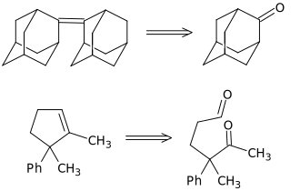

Планирование синтезов
Планирование синтезов Оглавление
Оглавление О проекте
О проектеЛекция 2. Ретрон двойной связи
1. Реакция Виттига. Стереохимический результат данной реакции зависит от преобладания кинетического либо термодинамического контроля. Тип контроля, в свою очередь, определяется тем, насколько стабилен исходный илид фосфора. Для нестабилизированных илидов протекает необратимая кинетически контролируемая реакция с преобладанием в продуктах Z-алкенов. В этом случае конфигурация двойной связи определяется отсутствием отталкивания функциональных групп на первой стадии реакции.
Тем не менее, даже для нестабилизированных илидов E-алкен может быть получен при помощи введения бутиллития.
Для стабилизированных илидов термодинамически контролируемая обратимая реакция приводит к образованию термодинамически более стабильных E-алкенов:
Различия в стабильности илидов фосфора и возможность реакции с альдегидами и кетонами для наиболее стабильных:
2. Преобразование Z-алкенов в E-алкены
3. Преобразование E-алкенов в Z-алкены (реакция Прилежаева)
4. Реакция Хорнера-Ведсворта-Эммонса
5. Реакция Петерсена
Стереоселективное проведение реакции Петерсена:
6. Реакция Вюрца
Анализ
Синтез
7. Синтез Z и E-винилгалогенидов
8. Синтез Z-алкенов из ацетилена
Анализ
Синтез
9. Метод Цейфеля
10. Метод Негиши
11. Реакция Мак Мури
Примеры:

12. Реакция Альдера (еновая реакция)
Примеры:
13. Гидрирование алкинов
14. Реакция метатезиса олефинов
Пример: